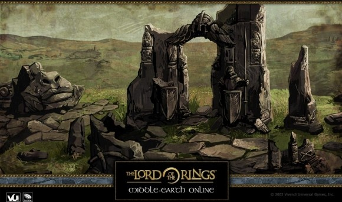
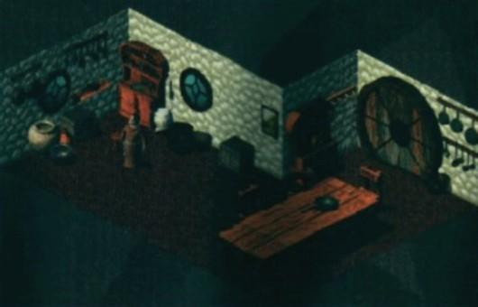
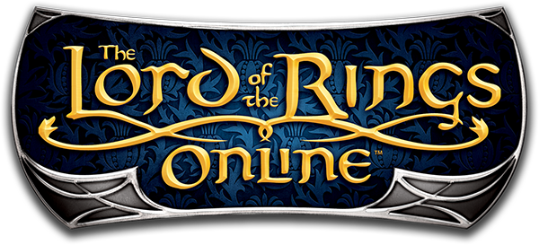
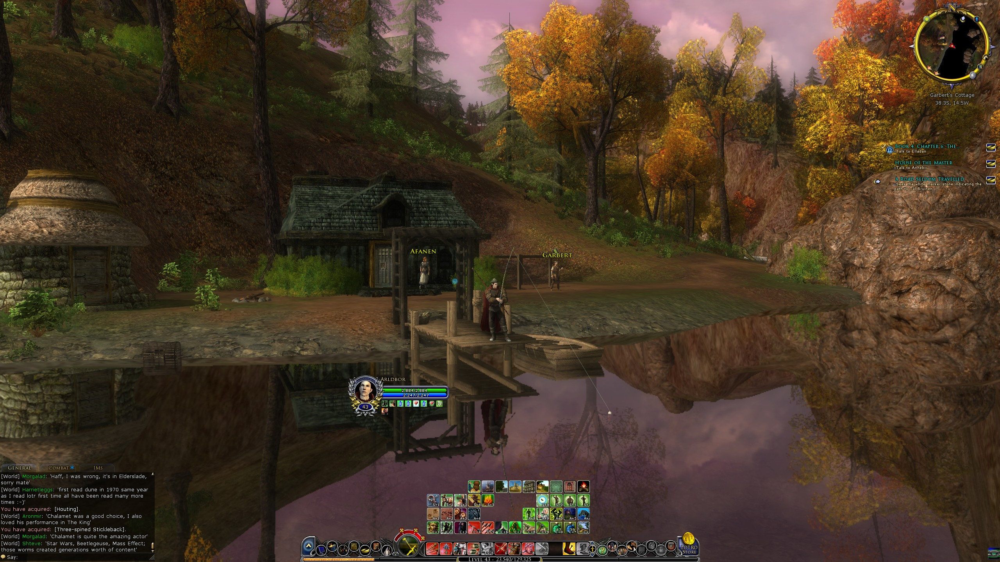

Lord of the Rings’in atmosferik dünyasını yaşatan böylesine güzel bir oyunu ilk çıktığı zamanlarda (2007) neden fazla ilgi göstermemişim, nasıl atlamışım anlayabilmek mümkün değil. Betasını bir miktar incelediğimi, oyun için hesap açtığımı biliyorum ama öylesine bırakmışım pek oynamadan. Belki o yıllarda online oynanan ve aylık ücret ödenmesi gereken oyunlara biraz tedbirle yaklaşıyor, uzak durmaya çalışıyordum.
Lord of the Rings’i online bir oyun haline getirme fikri 1998 yılına kadar uzanıyor. Bu işe ilk kalkışan Sierra firması, online oyunlar konusunda aslında o yıllar için bir miktar deneyime sahip. Sıra tabanlı 1996 yılında çıkardıkları The Realm Online’ının oyun motorunu Lord of the Rings dünyasında kullanma fikri ile gerekli lisansı almayı başararak Middle-Earth Online isimli bir oyun üzerinde çalışmaya başlamışlar.

Oyun piyasasında Ultim(img)a Online ve Everquest’in başarıları sonrası The Realm Online’ın 2D isometric oyun motorunun 3D’ye çevrilmesi gibi sancılı süreçler yaşadıktan sonra Sierra Vivendi’ye satılınca oyunun geliştirilme aşaması da sona ermiş.
 2007 yılına gelindiÄŸinde Turbine Games sonunda online bir Lord of the Rings oyununu piyasaya sürmeyi baÅŸarmış.
 Yaklaşık 2 haftadır oyunu, sonuna ulaÅŸmaya çalışmadan, sakin sakin, quest’leri ağır ağır okuyarak, grafikleri inceleyerek, müzikleri dinleyerek oynuyorum ve yıllardır ihmal ettiÄŸim Lord of the Rings evreninin büyülü dünyasında kaybolmuÅŸ gibiyim bu aralar.
Oyunun World of Warcraft, Elder Scrolls Online veya Final Fantasy kadar geniş bir kitlesi yok ama ilk çıktığı yıllardan beri oynayan sadık bir hayran kitlesi var. Turbine Games tarafından geliştirilen oyunu 2017 yılında Standing Stone Games devralmış ve o zamandan bu yana çok büyük yenilikler getirmemiş oyuna. Arada çıkan ek paketler var hatta 10 Kasım’da Fate of Gundabad paketi de çıkacak ama oyun ilk halinin özelliğini tutkulu biçimde koruyor.
Oyunun online oynayabilme kısmı ise bir hayli sıkıntılı. Data Center Amerika’da yer aldığından 140-150 ms. bekleme süresi ile oynanabiliyor ki PvMP için çok yüksek bir gecikme. Bununla birlikte yoğun saatlerde şiddetli lag yaşanıyor. Gecikme süresi değişmeyeceğinden yoğun saatlerde kalabalıktan uzak olmak için Amerika server’larında karakter yaratıp oynamak daha mantıklı gibi.
 Oyun geliÅŸtirilme aÅŸamasından baÅŸlayarak günümüze gelene kadar Lord of the Rings evrenini oldukça baÅŸarılı bir ÅŸekilde MMORPG bir oyun içine aktarıldığı görülebiliyor. Free to Play modeli ile piyasada yer edinmeye çalışan oynaması bedava olan oyunun daha keyifli hale gelebilmesi için satın alınması gereken özellikler ise Türkiye için oldukça pahalı.
Kısacası Lord of the Rings hikayesini farklı karakterlerin bakış açısıyla yeniden yaşamak ve hikayeye bağlı olarak oluşturulan son sayımlara göre 10.000’den fazla quest ile gelişen yeni lore’un tadına varmak isteyenlerin kaçırmaması gereken bir başyapıt Lord of the Rings Online…